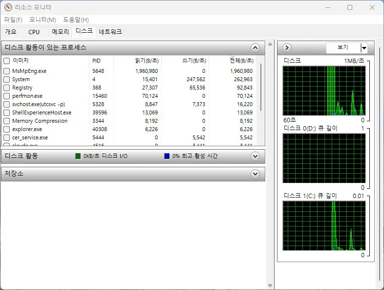

성능
디스크 사용률 100% 원인과 점검 순서
작업 관리자에서 디스크가 계속 100%로 표시되고 PC가 느려지는 경우
작업 관리자의 디스크 사용률 100%는 저장 공간이 꽉 찼다는 뜻이 아닙니다. 디스크가 처리할 수 있는 작업 시간이 모두 사용 중이라는 의미로, 전송량이 낮아도 응답이 지연되면 100%로 표시될 수 있습니다. 따라서 숫자 하나만 보고 SSD나 HDD를 바로 교체해서는 안 됩니다.
윈도우 업데이트, 검색 인덱싱, 백신 검사처럼 정상적인 백그라운드 작업도 잠시 사용률을 높입니다. 반면 수십 분 동안 사용률이 내려가지 않고 응답 시간이 길거나 디스크 오류가 기록된다면 저장장치 상태, 메모리 부족, 드라이버 문제를 더 자세히 봐야 합니다.
이 가이드는 어떤 프로세스가 디스크를 사용하는지 확인한 다음, 일시적인 작업인지 반복되는 장애 신호인지 구분하도록 구성했습니다. 중요한 파일이 있는 PC에서 오류가 의심되면 검사보다 백업을 먼저 진행하세요.
이 가이드가 필요한 상황
- 전송 속도는 낮은데 활성 시간만 계속 100%다.
- 프로그램을 열 때 수십 초씩 멈추고 디스크 응답 시간이 크게 오른다.
- 이벤트 로그에 Disk, Ntfs, storahci 관련 경고가 반복된다.
먼저 확인할 항목
- 사용 프로세스와 지속 시간 확인 — 업데이트나 백신 검사처럼 원인이 분명한 일시적 사용량은 기다리면 내려가지만, 원인 없는 지속 사용은 추가 점검이 필요합니다. 작업 관리자에서 디스크 열을 정렬하고 10분 정도 관찰합니다. 프로세스 이름, 읽기·쓰기 속도, 사용률이 내려가는 시점을 기록하세요.
- 리소스 모니터에서 파일 경로 확인 — 같은 프로세스라도 어떤 파일을 반복해서 읽는지 알아야 업데이트, 동기화, 가상 메모리 문제를 구분할 수 있습니다. 리소스 모니터의 디스크 탭에서 총 바이트와 응답 시간을 확인합니다. 클라우드 동기화 폴더나 업데이트 파일이 반복되는지도 봅니다.

- 여유 공간과 메모리 사용량 점검 — 시스템 드라이브 공간이나 메모리가 부족하면 페이지 파일 사용이 늘어 디스크가 계속 바빠질 수 있습니다. 저장소 설정에서 임시 파일을 정리하고 시스템 드라이브 여유 공간을 확보합니다. 메모리가 90% 이상인지도 함께 확인하세요.
- 건강 상태와 오류 기록 확인 — 읽기 재시도나 컨트롤러 오류는 낮은 전송량에서도 활성 시간을 100%로 만들 수 있습니다. 제조사 진단 도구와 이벤트 뷰어를 확인합니다. SMART 경고나 반복되는 디스크 오류가 있으면 중요한 파일부터 다른 저장장치에 백업하세요.
원인을 더 정확히 나누는 방법
HDD와 SSD에서 해석이 다른 이유
HDD는 작은 파일을 여러 곳에서 읽을 때 헤드 이동 때문에 쉽게 100%에 도달합니다. SSD는 일반 작업에서 계속 100%가 유지된다면 펌웨어, 열로 인한 속도 저하, 여유 공간 부족, 저장장치 오류를 더 주의해서 봐야 합니다.
서비스를 무작정 끄기 전에
검색 인덱싱이나 SysMain을 영구적으로 끄면 당장은 사용률이 내려가도 검색과 앱 실행 성능이 나빠질 수 있습니다. 먼저 해당 서비스가 실제 원인인지 확인하고, 일시 중지 후 재현 여부를 비교해야 합니다.
확인 결과에 따른 다음 단계
- 특정 프로세스가 분명할 때 — 앱의 업데이트, 동기화, 캐시 설정을 먼저 조정하세요. 정상 작업이 끝난 뒤에도 같은 프로세스가 계속 디스크를 점유하는지 확인합니다.
- 프로세스가 없는데 100%일 때 — 응답 시간, 이벤트 로그, SMART 상태를 우선 확인하세요. 소음이나 멈춤이 동반되는 HDD라면 추가 검사를 반복하기보다 백업이 먼저입니다.
피해야 할 실수
- 디스크 100%를 저장 공간 100%와 같은 뜻으로 해석하는 것
- 원인 확인 없이 여러 윈도우 서비스를 한꺼번에 사용 중지하는 것
- SMART 경고가 있는데 성능 검사와 재부팅을 계속 반복하는 것
자주 묻는 질문
- 부팅 직후 몇 분만 100%인 것도 고장인가요? 업데이트, 백신 검사, 시작 앱이 끝난 뒤 내려간다면 정상 범위일 수 있습니다. 지속 시간과 어떤 프로세스가 사용했는지를 함께 보세요.
- SSD로 바꾸면 무조건 해결되나요? HDD의 기계적 지연은 크게 줄어들 수 있지만 메모리 부족, 동기화 앱, 손상된 드라이버가 원인이면 SSD에서도 반복될 수 있습니다. 원인을 먼저 구분하는 편이 좋습니다.
최종 검토일: 2026-07-14